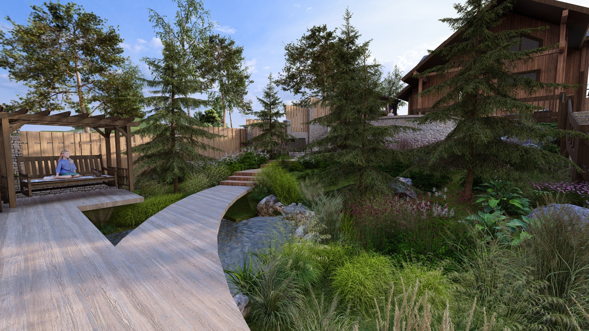
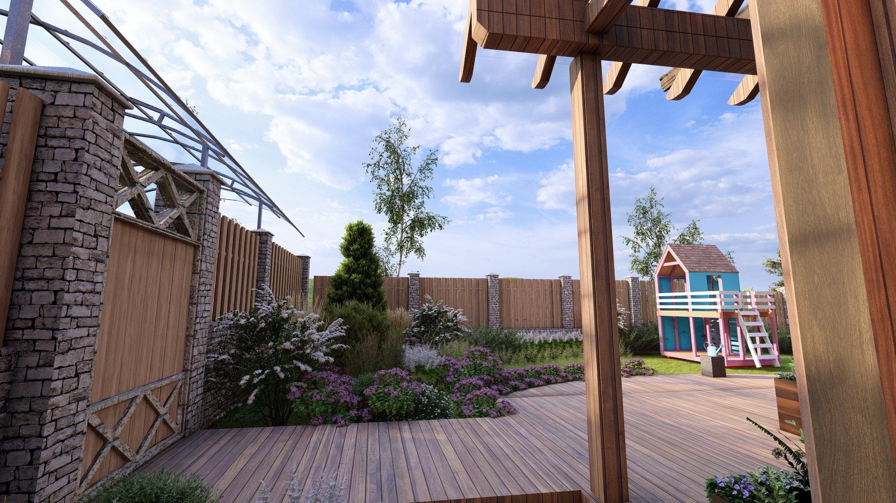

Концепция
+ визуализация
Увидьте свой будущий сад ещё до начала работ. Продуманная организация пространства и реалистичные 3D-изображения позволяют представить результат заранее.

От особенностей участка — к образу будущего сада
Изучаем рельеф, освещённость, существующие насаждения, постройки, окружение и ограничения. Уточняем задачи семьи, предпочтения в дизайне и предполагаемый бюджет.
Определяем функциональные зоны, прогулочные маршруты, размещение террас и площадок, взаимосвязь дома, сада и растительных композиций.
Подбираем характер будущего пространства, палитру, основные материалы и направления озеленения, объединяя всё в цельную композицию.
Готовим наглядный план территории и реалистичные визуализации сада с ключевых точек обзора. Согласовываем внешний облик до начала работ.

Вы знаете, каким станет ваш сад
Вы получаете индивидуальную концепцию, генеральный план и согласованный комплект 3D-визуализаций. Проект помогает увидеть функциональную организацию и эстетику участка, обсудить решения и перейти к дальнейшему планированию бюджета.
Как проходит работа
Знакомство и анализ
Обсуждаем задачи, участок и пожелания.
Концепция
Разрабатываем планировочное и стилевое решение.
Визуализация и передача
Показываем будущий сад, согласовываем и передаём материалы.
Стоимость рассчитывается индивидуально по площади участка, сложности рельефа и объёму визуализации.
Получить расчёт в MAX ↗В переписке MAX укажите: «Концепция + визуализация».